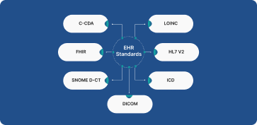

Health Care Logistic System
Streamlining the Delivery of Medical Supplies and Services
By EHR Logics|22/03/2023
A dependable and effective system for transporting biological materials like blood samples and units is crucial for the efficient functioning of modern healthcare facilities like hospitals, labs, pharmacies, and blood banks. It is essential to carefully manage logistics to ensure secure handling and optimal transportation conditions for these materials, enabling smooth operations and cost-effectiveness.
You may also like this
We provide the special tips and advice’s of heath care treatment and high

TechnicalBy EHR Logics|25/02/2023
EHR Standards: Bridging the Gap between Healthcare Systems for Better
Interoperability
Electronic health records (EHRs) have become an essential component of healthcare
delivery in recent years. EHRs allow healthcare providers to access and share
patient information in real-time, enabling more efficient and coordinated care.
An Electronic Health Record (EHR) is a digital version of a patient's medical
record, which includes their medical history, diagnoses, medications, test
results, and other health-related information. EHRs are becoming increasingly
popular as they provide an efficient and secure way to store, manage, and share
patient health information between healthcare providers.
The Role of Technology in Logistics: How Digitalization is Revolutionizing
Healthcare Delivery
Effective healthcare logistics is critical for ensuring that patients receive the
care they need in a timely and cost-effective manner. By optimizing supply chain
management, distribution and transportation,